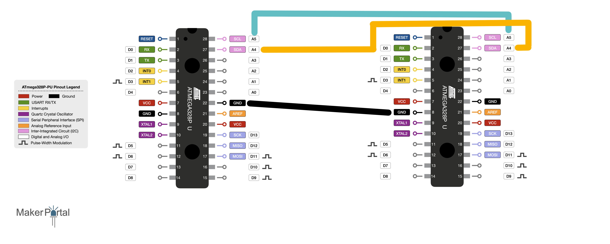

1. Utilisation
_______ Dans notre projet, une seule carte Arduino uno ne nous suffira pas. Nous pourrions donc utiliser une carte Arduino mega mais cela ne conviendra pas. En effet, dans un souci de miniaturisation, nous utiliserons 2 cartes Arduino uno qui seront déjà miniaturisées au maximum. Pour qu'elles puissent échanger entre elles, nous utiliserons le système de communication I2C (Inter-Integrated Circuit) et la bibliothèque Wire.h d'Arduino.
2. Connexion
_______ Dans ce cours, le plus simple ce sont les connexions. En sachant que le bus I2C se nomme aussi TWI (Two Wire Interface --> interface deux fils), vous êtes rassurés. Effectivement, il y a seulement deux fils à connecter. Le premier est le fil SDA (Serial DAta line), la liaison data qui se connecte entre les deux ports A4 de nos Arduinos. La seconde est le fil SCL (Serial Clock Line), l'horloge qui se connecte entre les deux ports A5 de nos Arduinos. Aussi, la masse des Arduinos doit être la même. Pour finir, je tiens à vous signaler que les ports SDA et SCL changent d'un type d'Arduino à un autre.
3. Master Reader - Slave Sender
_______(Maître lecteur --> esclave envoyeur) Maintenant, je vais vous expliquer le moyen de communiquer entre ces deux Arduinos (ou plus). Tout d'abord, il faut que vous compreniez le principe de maître et esclave(s) (il peut y avoir plusieurs esclaves mais un seul maître). Le maître est celui qui décide si communication il y a et l'esclave se plie à ses désirs. Cette demande est réalisée grâce à un front montant (passage de l'état "bas" à l'état "haut") de la broche SCL commandée par le master. Lors de chaque front montant, un bit est envoyé par l'esclave sur la broche SDA et cela est répété autant de fois que le nombre de bit demandé lors de l'ouverture de la communication par le master.
Mais existe-t-il une autre forme de communication I2C ?
_______Oui bien sûr il existe le moyen de communiquer par master sender - slave reader (Maître envoyeur - esclave lecteur). C'est l'inverse de ce que nous avons vu précédemment, le maître décide quand il envoie les informations et l(es) esclave(s) vont pouvoir les lire. Pour récapituler, le maître est celui qui ouvre la communication et les esclaves sont ceux qui obéissent à cette communication. Il est important de préciser que la communication doit être soit master reader - slave sender OU Master sender - slave reader mais en aucun cas les deux en même temps.
4. Code maître
_______Avant toute chose, il faut inclure la bibliothèque wire et l'initialiser dans le setup. Il ne sert à rien de donner un numéro au maître car le numéro sert à demander des informations à un esclave qu'on repère avec son numéro. Ensuite, dans le loop nous allons faire une requête grâce à la fonction "requestFrom" de la bibliothèque Wire. Il faut préciser à quel esclave la demande doit être réalisée (dans notre cas l'esclave numéro 1) mais aussi indiquer le nombre de bits. Pour finir, dans une boucle "while" qui prend comme argument "Wire.available()" (dans le cas où l'esclave envoie moins de bits que prévu), l'information de l'esclave va être lue et stockée dans une variable grâce à la fonction "read ()". Il est important de préciser qu'il faut stocker la valeur du bit dans une variable de type char. Dans le code ci-dessous nous utiliserons le port série pour afficher les caractères reçus.
#include <Wire.h>
char c;
void setup() {
Wire.begin();
Serial.begin(9600);
}
void loop() {
Wire.requestFrom(1, 16);
while(Wire.available()){
c = Wire.read();
Serial.println(c);
}
}
5. Code esclave
_______Après avoir inclus la bibliothèque wire et défini dans le setup l'esclave en tant qu'esclave numéro un, on va lier la fonction qui envoie les données dans le setup via un onRequest(nom_fonction). Le nom de la fonction sera pour nous "requete" et dans cette fonction nous y mettrons un Wire.write() avec dans les parenthèses ce que l'on souhaite envoyer. Cette fonction sera donc appelée dès que le master le decidera et donc pendant n'importe quelle action de l'esclave.
#include <Wire.h>
void setup() {
Wire.begin(1);
Wire.onRequest(envoyer);
}
void loop() {
}
void envoyer(){
Wire.write("arduino à zebrus");
}
6. Récupération des données
_______Pour recupérer les données, il faut déjà bien les envoyer. Pour se faire on va envoyer les données une par une en les précédant d'une lettre qui va les repérer. Le master va donc détecter quelles variables sont quelles variables grâce aux lettres. Pour envoyer les données on va seulement mettre autant de "Wire.write ()" que de bits à envoyer. Pour que le maître les récupére, il faut d'abord les stocker dans un "char" comme vu plus haut, puis comparer cette valeur (if) à différentes lettres qui ont été envoyées par l'esclave. Si une lettre a été reconnue, une variable de type "int" se chargera de stocker un chiffre qui sera différent pour chaque lettre. Enfin, lors du prochain tour de boucle un "if" permettra de stocker le bon chiffre dans la bonne variable avant de remettre la valeur de la variable de type "int" à zéro de manière à de nouveau reconnaître une autre lettre.
Code esclave :
int variable_un = 7;
int variable_deux = 3;
int variable_trois = 6;
void setup(){
Wire.begin(1);
Wire.onRequest(envoyer);
}
void loop(){
}
void envoyer(){
Wire.write('a');
Wire.write(variable_un);
Wire.write('b');
Wire.write(variable_deux);
Wire.write('c');
Wire.write(variable_trois);
}
Code maître :
#include <Wire.h>
int variable_un;
int variable_deux;
int variable_trois;
int creation_variable;
char c;
void setup(){
Wire.begin();
}
void loop(){
Wire.requestFrom(1, 6);
while(Wire.available()){
if(creation_variable == 1){
variable_un = Wire.read();
creation_variable = 0;
}
if(creation_variable == 2){
variable_deux = Wire.read();
creation_variable = 0;
}
if(creation_variable == 3){
variable_trois = Wire.read();
creation_variable = 0;
}
else{
c = Wire.read();
if(c == 'a'){
creation_variable = 1;
}
if(c == 'b'){
creation_variable = 2;
}
if(c == 'c'){
creation_variable = 3;
}
}
}
}